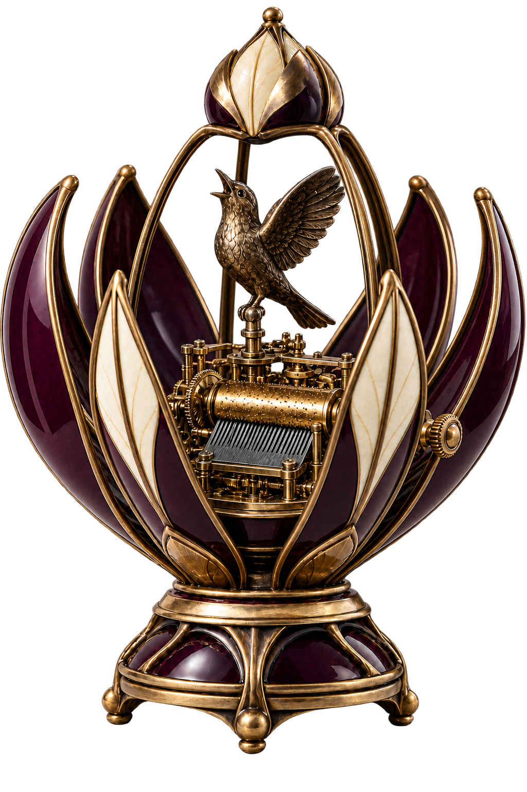
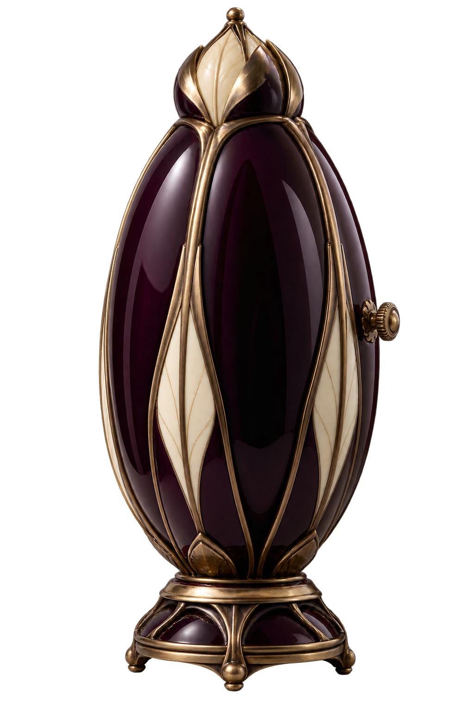
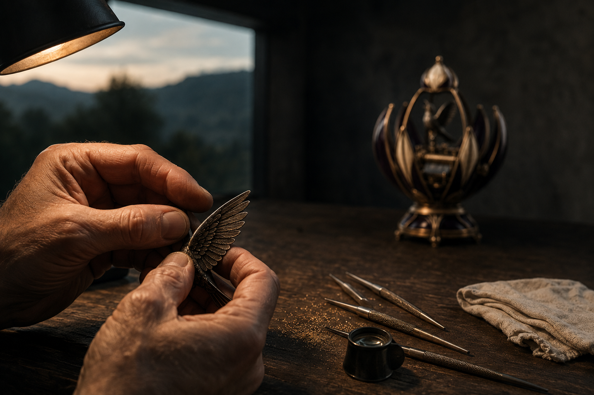

I / The surfaceDarkness
Darkness
with depth.
Aubergine holds the light at its edges. As the object turns, the colour moves from almost black to a deep wine red.


A turn of the crown.
A curtain of lacquer.
Then, the extraordinary.
Imagine a sculpture that keeps a performance inside. Its shell parts, its bird rises, and a melody takes shape in air. LARK is our study in the pleasure of giving something your undivided attention.
Beneath the lacquer
Scroll through the eye of the movement.
Stored energy, made audible
The cylinder carries the sequence. Its pins lift and release the steel comb. Each tooth vibrates at its own pitch. A melody emerges from precisely timed contact.
Aubergine holds the light at its edges. As the object turns, the colour moves from almost black to a deep wine red.
Look along the edge of a feather. Sculpture gives the mechanism a gesture: the instant before a bird takes flight.

A fine edge. A soft reflection. A feather that catches the light. Craft lives in the decisions that reward a second look.
The room falls quiet
An original digital music-box sketch.
Sound begins only when you press play.